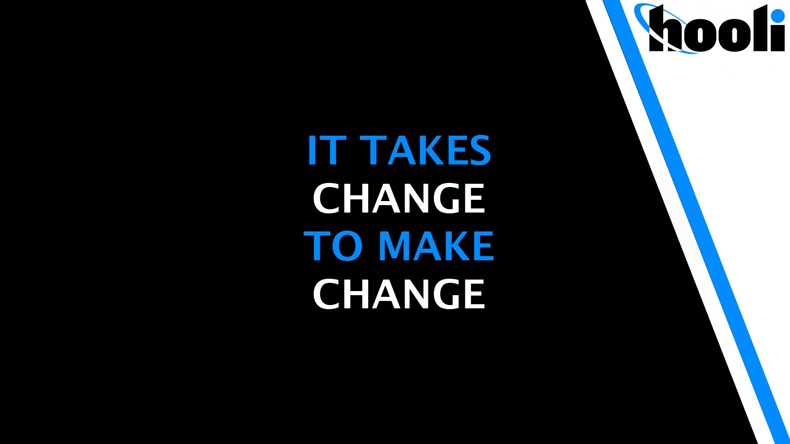

About This Company

Hooli is an international technology corporation founded by Gavin Belson and Peter Gregory. It's main competitor is
Pied Piper. It is speculated that this company is meant to be a fictional portrayal of real life Apple, Microsoft, and Google.
When Gavin Belson acquired PiperChat, a company with toxic assets, the board voted that Gavin Belson be replaced by
Jack Barker as CEO.
Hooli was later downsized after the failure of Nucleus project, compression algorithm meant to compete with Pied Piper.
Torwards the end of the show, Hooli was acquired by Pied Piper.